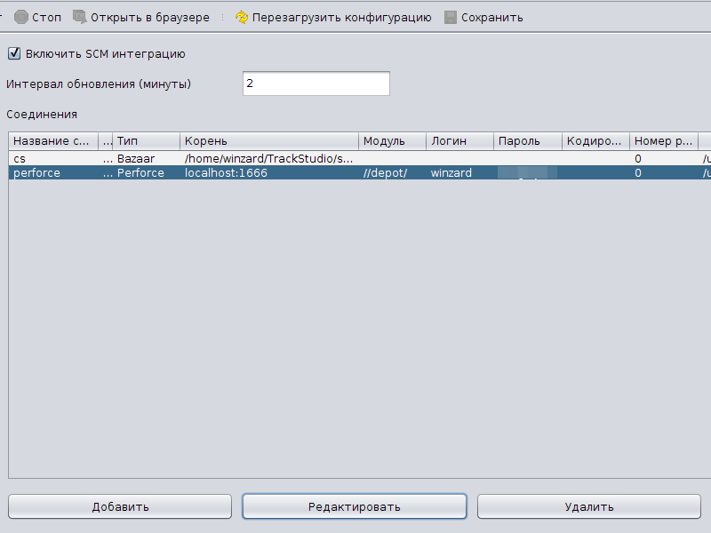
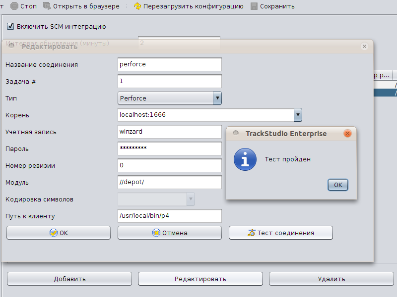
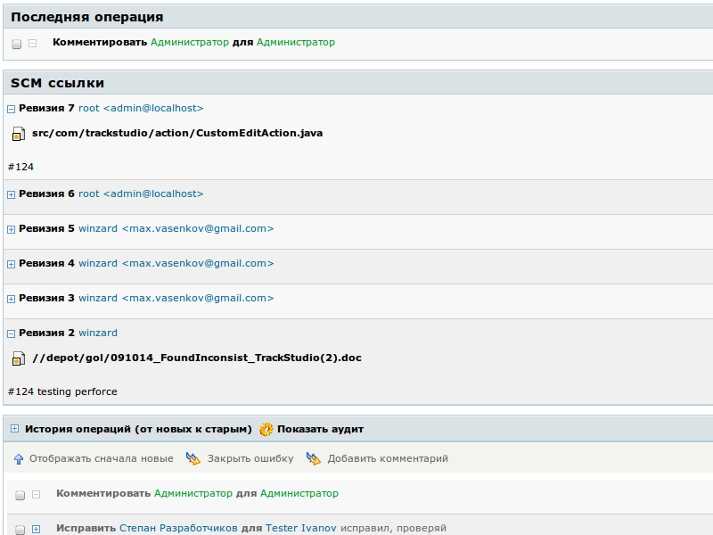
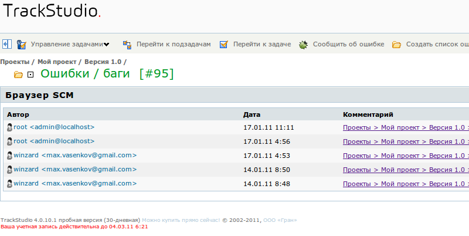

|
<< Click to Display Table of Contents >> Navigation: Rus > Руководство администратора > Как настроить интеграцию с системами управления исходным кодом (SCM) > Как настроить интеграцию с Perforce |
Perforce - это коммерческая система управления версиями, созданная компанией Perforce Software. Один сервер Perforce может одновременно иметь несколько хранилищ, называемых «депо» (англ. depot).
Сервер Perforce может быть установлен на операционные системы Unix, GNU/Linux, Mac OS X, Microsoft Windows. Мы опишем установку и настройку Perforce на GNU/Linux для тестирования возможностей TrackStudio.
Скачайте сервер Perforce p4d. На странице скачивания есть версии для различных операционных систем, в том числе для 32 и 64-разрядных версий GNU/Linux.
На этой же странице скачайте консольное клиентское приложение p4.
Поместите эти файлы в директорию /usr/local/bin или /opt/perforce или в любую удобную вам директорию.
Сделайте эти файлы исполняемыми:
chmod +x p4
chmod +x p4d
Создайте директорию для корневого хранилища perforce (Например /usr/local/p4root)
Взаимодействие с сервером Perforce происходит по протоколу TCP/IP. По умолчанию сервер слушает домен с именем perforce через порт 1666.
Запустите сервер Perforce командой:
p4d -r /usr/local/p4root -p localhost:1666 &
Чтобы остановить сервер Perforce, выполните команду
p4 -p localhost:1666 admin stop
Вы можете настроить параметры соединения с вашим хранилищем Perforce в утилите TrackStudio Server Manager, либо, если ее нет - в любом текстовом редакторе.
•Запустите приложение для управления сервером TrackStudio (SMAN)
•Перейдите в раздел SCM
•Отметьте опцию "Включить SCM интеграцию", если она не включена
•Укажите интервал обновления информации в минутах. Для тестирования лучше указать интервал в 1 минуту, для практического использования достаточно 10 минут.

•Нажмите кнопку "Добавить"

•В открывшемся окне укажите название соединения
•Введите номер задачи, соответствующей проекту, интеграцию для которого вы ходите включить. Интеграция будет осуществляться для всех подзадач этой задачи.
•Выберите тип SCM: Perforce
•Укажите адрес и порт сервера Perforce
•Укажите имя пользователя и пароль
•Укажите путь к клиенту p4
•Укажите модуль проекта
•Нажмите кнопку "Тест соединения".
•Нажмите кнопку "ОК", чтобы сохранить параметры соединения.
Если у вас отсутствует возможность запустить Server Manager, вы можете настроить интеграцию с Perforce в файле trackstudio.scm.properties
•Откройте файл trackstudio.scm.properties
•Включите интеграцию с SCM
trackstudio.scm.useSCM=yes
•Укажите время обновления информации в минутах
trackstudio.scm.updateInterval=10
Теперь можно настроить конкретное подключение.
•Для каждого из ваших проектов создайте параметр trackstudio.scm.<name>.tasknum, где tasknum — номер проекта, а <name> — название соединения. Интеграция с SCM будет осуществляться для всех подзадач указанной в этом параметре задачи.
Пример:
trackstudio.scm.perforce.tasknum=1
В этом примере хранилище будет подключено к корневому проекту и интеграция будет осуществляться для всех задач в системе.
•Укажите тип SCM:
trackstudio.scm.perforce.type=Perforce
•Укажите адрес и порт сервера Perforce:
trackstudio.scm.perforce.root=localhost\:1666
•Укажите параметры учетной записи в SCM, через которую будет осуществляться мониторинг (разработчики будут отправлять информацию в систему от своего имени).
trackstudio.scm.perforce.login=login
trackstudio.scm.perforce.password=password
•Укажите путь до клиента Perforce:
trackstudio.scm.perforce.native.client=/usr/local/bin/p4
•Укажите модуль, соответствующий коду проекта:
trackstudio.scm.perforce.module=//depot/
•Вы также можете указать номер ревизии, с которой начинать индексирование:
ttrackstudio.scm.perforce.initialRevision=0
Чтобы ваши коммиты в Perforce связывались с конкретными задачами TrackStudio, добавляйте в сообщения к коммитам номер (или номера) соответствующих задач в системе.
После того, как TrackStudio обработает информацию, при просмотре задачи будут выводиться логи коммитов в Perforce

Вы также можете посмотреть логи коммитов ко всем задачам проекта, со ссылками на эти задачи. Для этого в TrackStudio перейдите в нужный вам проект и выберите пункт меню "Браузер SCM"
